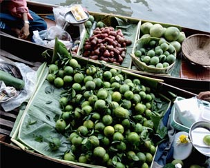
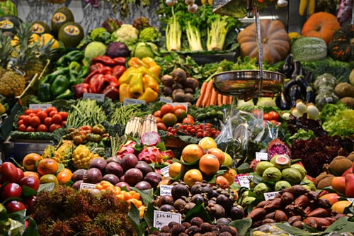

Good food
L'histoire d'un concept
Le projet d'ouvrir une chaîne de restauration sur le concept du sacré-salé s'est construit il y a bien longtemps. En effet, M. Keller et M. Therond avaient l'habitude de manger ensemble le midi lors de leur tendre enfance, ils cuisinaient sans cesse avec du miel pour donner ce goût sucré. C'est à cet âge que certaines recettes comme la carbonara ou le wok au poulet ont été revisiter. ils savaient que cette tendance de mélanger un plat salé avec un goût sucré pouvait faire fureur et que ce concept n'était pas assez développé. ils ont tous les deux fait des études différente. M. Therond a suivi une école de commer tandis que M. Keller a suivi des étdes de web-developement. Tout deux passionnés de rap, ils ont personnalisé leur locaux au couleur de la street avec du graph qui représente beaucoup le milieu urbain. Ils organisent régulièrement des évènements pour promouvoir leur restaurant avec la venu d'artiste urbain comme Youngpeuff, Lil Crazy.